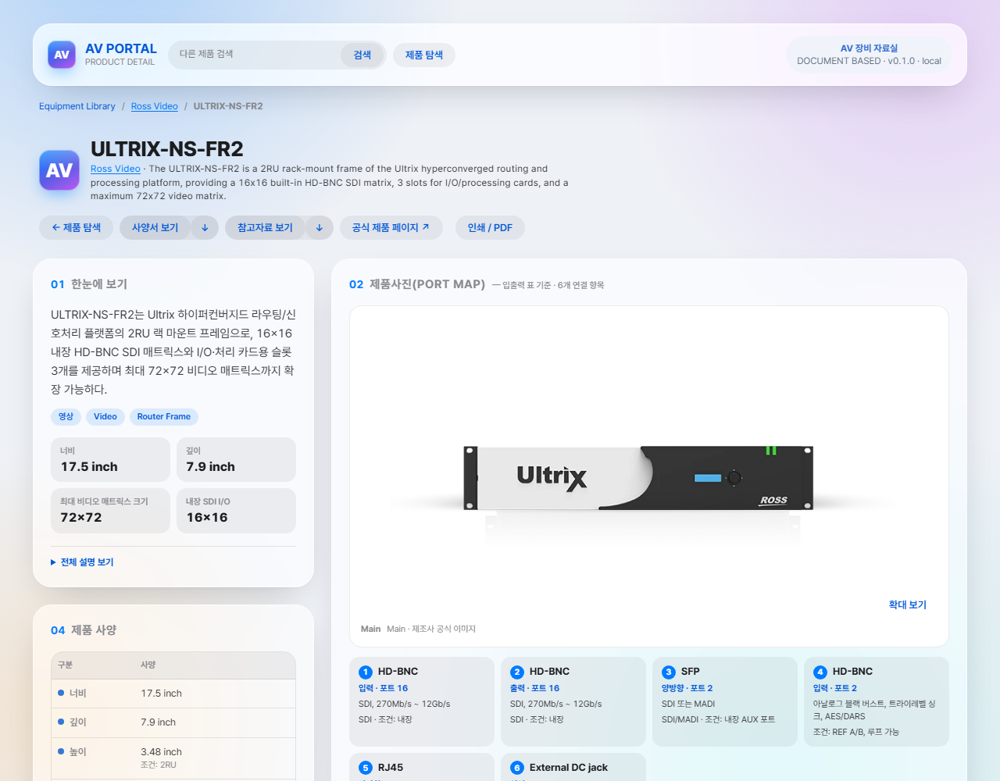
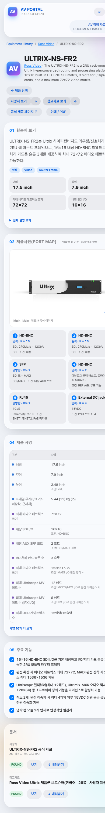
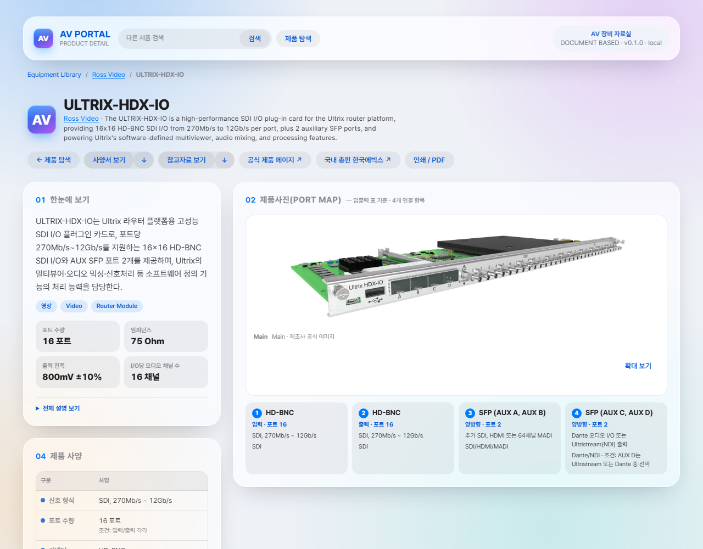
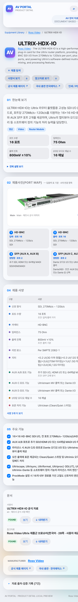

W-20261018-001 — Ultrix 확정 값 공개 화면 미리보기
세션 B 로컬 포털 렌더. 모바일 상세는 전체 사양을 펼쳐 15입력/15출력, 51 및 AUX C·D 값이 보이는 상태.
ULTRIX-NS-FR2 · 1280px
ULTRIX-NS-FR2 · 390px · 전체 상세
ULTRIX-NS-FR2 · 390px · UHD 값 포함 ULTRIX-HDX-IO · 1280px
ULTRIX-HDX-IO · 1280px
ULTRIX-HDX-IO · 390px · 전체 상세
ULTRIX-HDX-IO · 390px · AUX C·D 값 포함